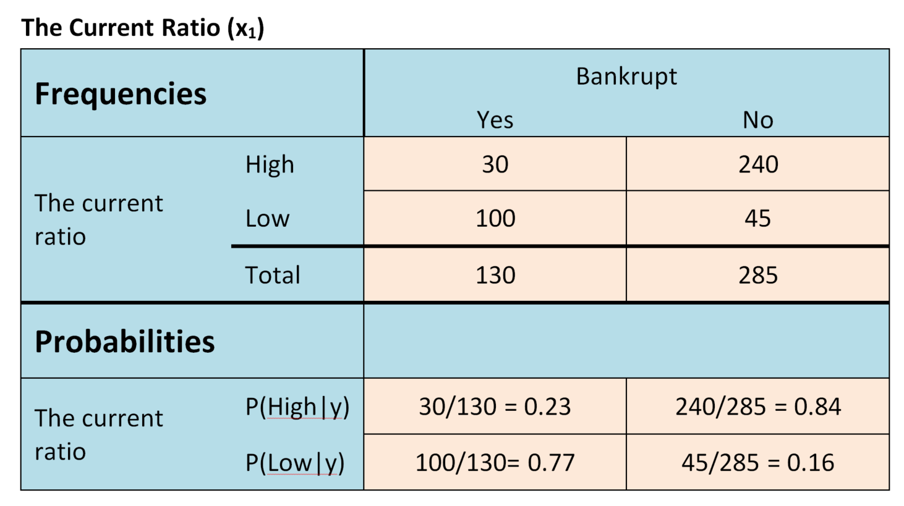
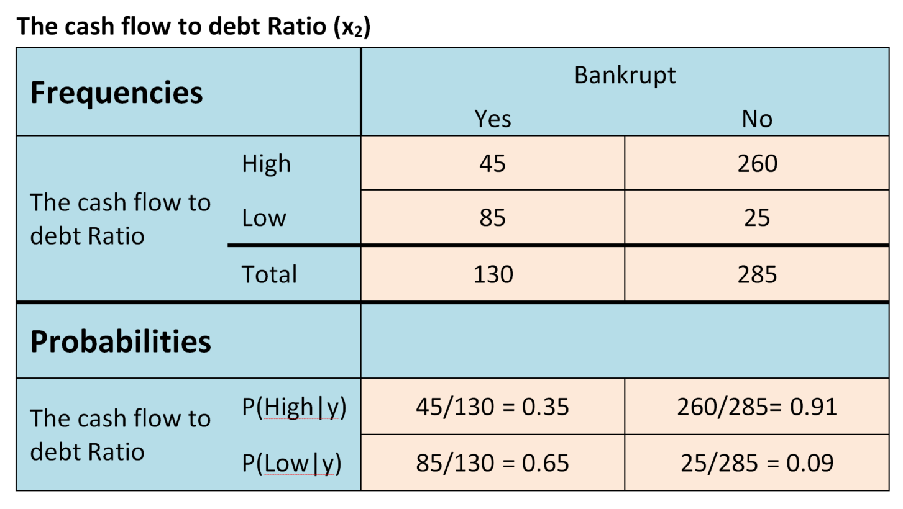
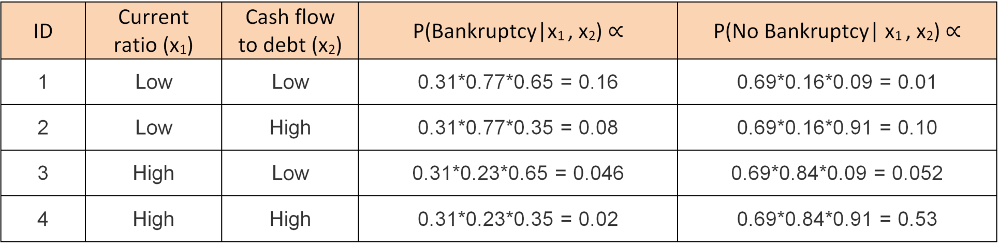
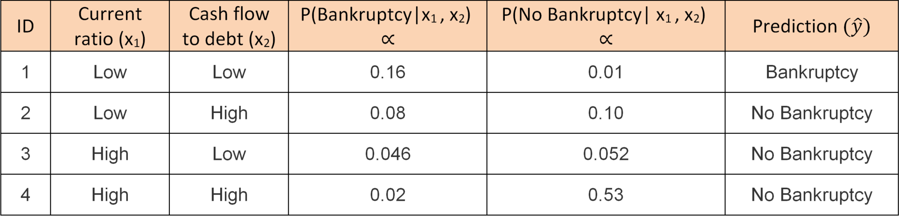

Theory: Naïve Bayes Classifier
Naive Bayes classifiers are a group of classification algorithms dependent on Bayes’ Theorem. They are fast, easy to implement and often reliable. Consequently, they are used in a variety of classification tasks, such as in NLP, recommendation systems and predicting various health outcomes.
Baye’s Theorem calculates the probability of an event, given that some other event has already occurred. The formula is as follows:
P(y|X) =We are calculating the probability of y occurring, given that X has already occurred. So, y is the class we are trying to predict, and X represents all the n features:
X = (x1, x2, ... , xn)
In our case, we are predicting the probability of a firm going bankrupt, given some firm characteristics, such as profits, return on assets, revenues, costs etcetera. In the formula above, by substituting for X and expanding the expression using the chain rule, we get:
P(y|X) =The denominator is constant for all entries in our dataset. Therefore, we can think of P(y|X) as being proportional to the numerator:
P(y|x1, x2, ... , xn) ∝ P(x1|y) × P(x2|y) × ... × P(xn|y) × P(y)
P(y|x1, x2, ... , xn) ∝ P(y) × ∏P(xi|y)
Bayes Naïve classifiers need two assumptions to be fulfilled. First, the features should be independent. This implies for example that a firm’s level of profits should not affect revenues etcetera. Secondly, each feature should have an equal impact on the outcome. These assumptions do generally not hold in real life applications. It could hamper the performance of the classifier, hence, the name naïve.
For the sake of clarity, I present two example features below; the current ratio and the cash flow to debt ratio. For simplicity, I illustrate the calculations by only looking at “high” and “low” values, although these measures are usually continuous. Notably, Bayes classifier can also handle continuous variables, although I do not show it here.
The current ratio, which divides current assets by current liabilities, is one of the primary liquidity ratios used for evaluating a company's financial soundness. It evaluates a company's capability of handling all its short-term debt obligations, by measuring the adequacy of the company's current resources to cover all of its debt obligations for the next 12 months. A higher current ratio indicates that the company has more liquidity. The cash flow to debt ratio is calculated as cash flow from operations divided by total debt. It is sometimes considered the single best predictor of financial business failure. A higher ratio indicates a company more soundly capable of covering its debt.

The frequency table shows the frequencies of each instance in our data. Thus, that is the data on which we are basing our prediction model. In machine learning terms, this is our training data. Below that, in the probability section, I have calculated the conditioned probabilities of high and low current ratios. For example, the first cell in the probability section contains the probability of having a high current ratio, given that the firm has gone bankrupt. In formula terms:
P(x1│y) = P(Cash Ratio = High│Bankrupt) = 0.23
Moreover, the probability of a high cash ratio given no bankruptcy is given by:
P(x1│y) = P(Cash Ratio = High│Not Bankrupt) = 0.84
The same reasoning goes for the conditional probability of low current ratio.
We can make the same table for our second feature, cash flow to debt ratio:

Although the method allows for multivariate cases, our class variable only has two outcomes; bankrupt or not bankrupt. Moreover, we also know the probability of going bankrupt from this data:
P(y) = P(Bankruptcy) =As well as the probability of not going bankrupt:
P(y) = P(No Bankruptcy) =Let’s say in new data, we know the current ratio and the cash flow debt ratio, but we do not yet know whether the firm is going to go bankrupt. Thus, we would like to predict bankruptcy, given a certain current ratio and a certain cash flow debt ratio. Below, you find some example data containing information on current ratio and cash flow to debt ratio, but no information on bankruptcies. Using the Bayes classifier formula, we calculate P(y) × P(x1|y) × P(x2|y) for each individual:

The class with the highest estimated probability for a particular individual becomes our prediction. Formally, we have:
^y = argmaxyP(y) × ∏P(xi|y)In terms of predictions, it translates to:

Thus, we predict firm 1 to go bankrupt, and the rest of the firms to not go bankrupt.